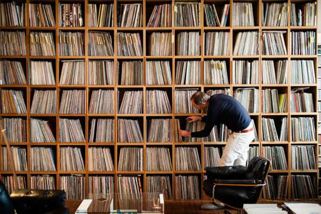

BEM VINDO À
DEGUSTAÇÃO DE MÚSICAS GRATUITAS DO YOUTUBE

Escolha um gênero e aproveite
Jazz e Blues
Soft Feeling - Cheel
Rock and Roll
Sharp - Jeremy Korpas
Clássica
Gymnopedie No 1 - Satie
Um pouquinho mais de clássica
Clair de Lune - Claude Debussy